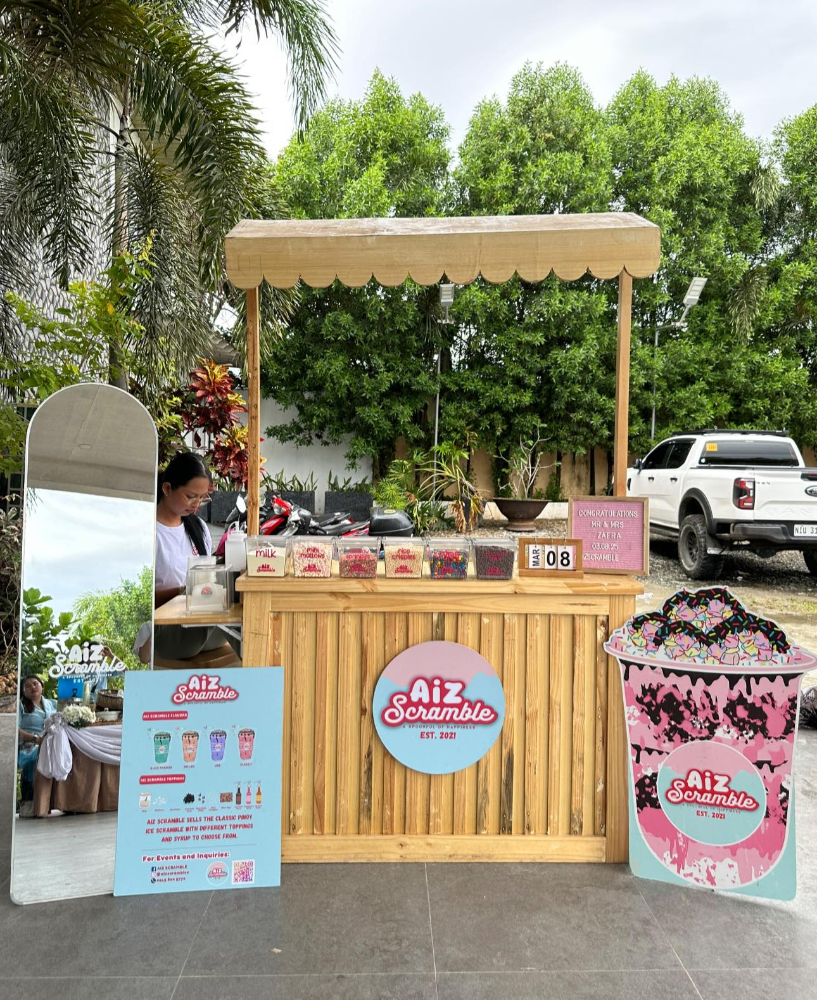
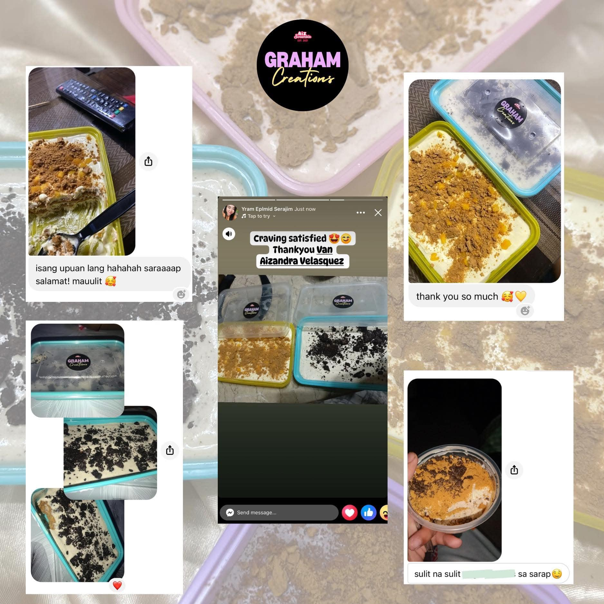
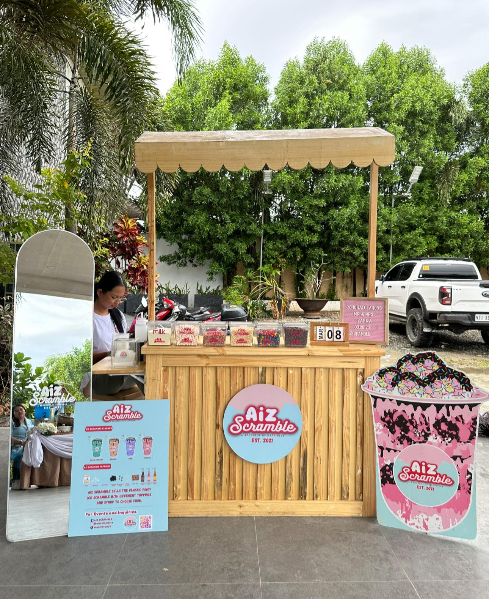
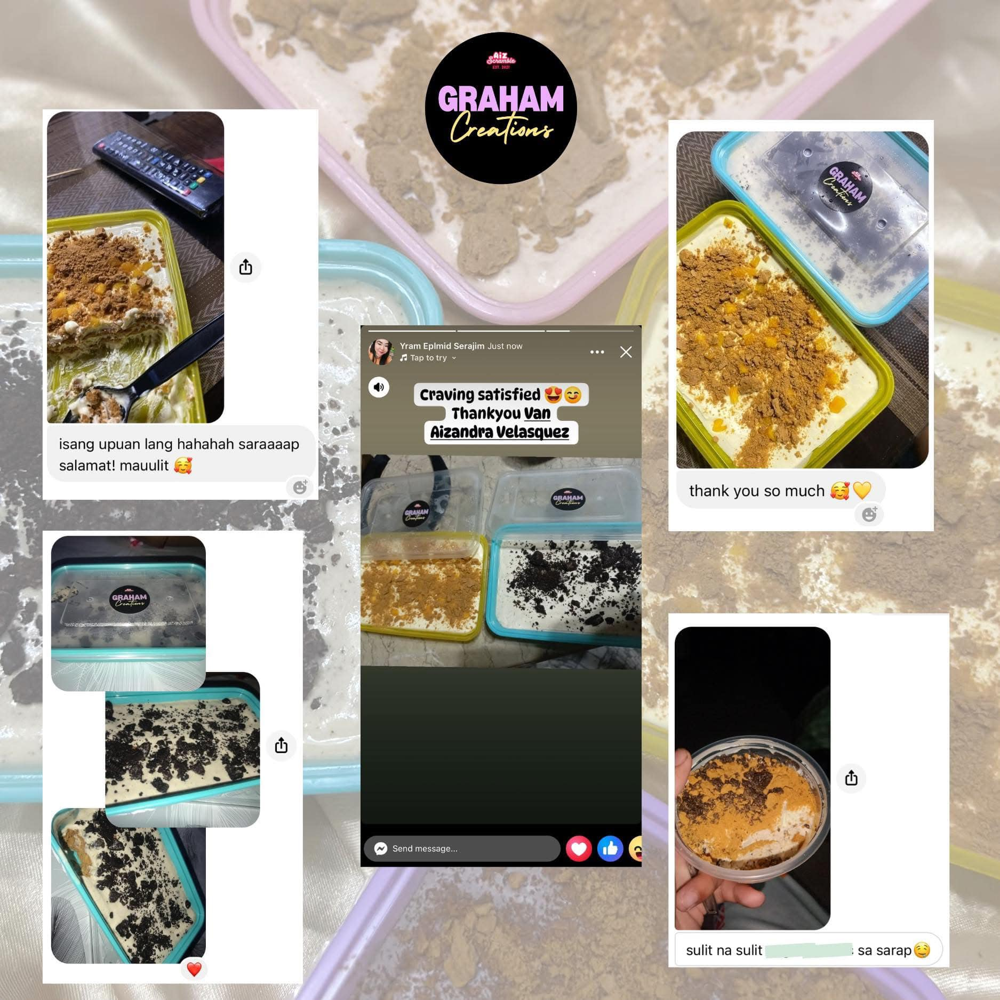
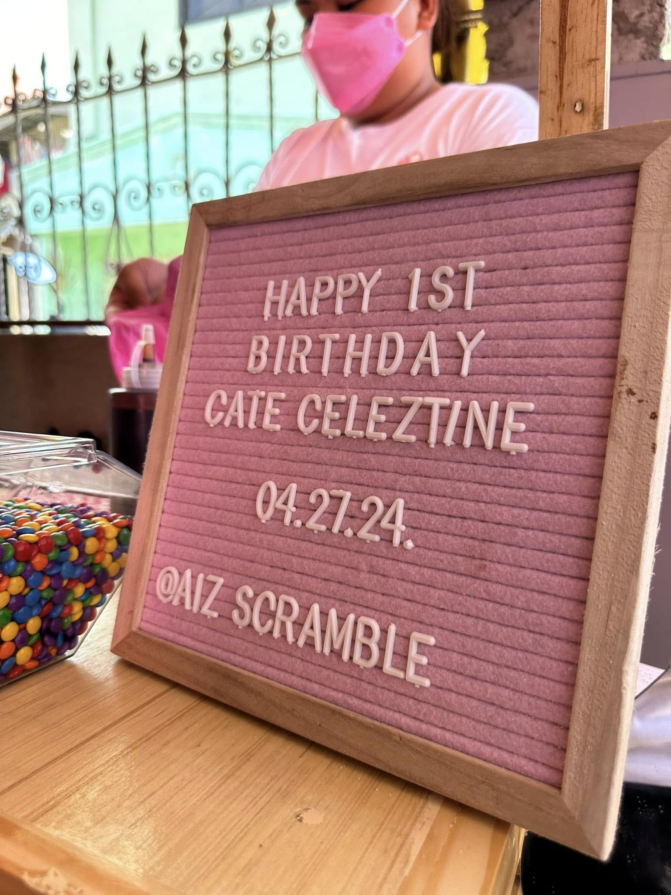
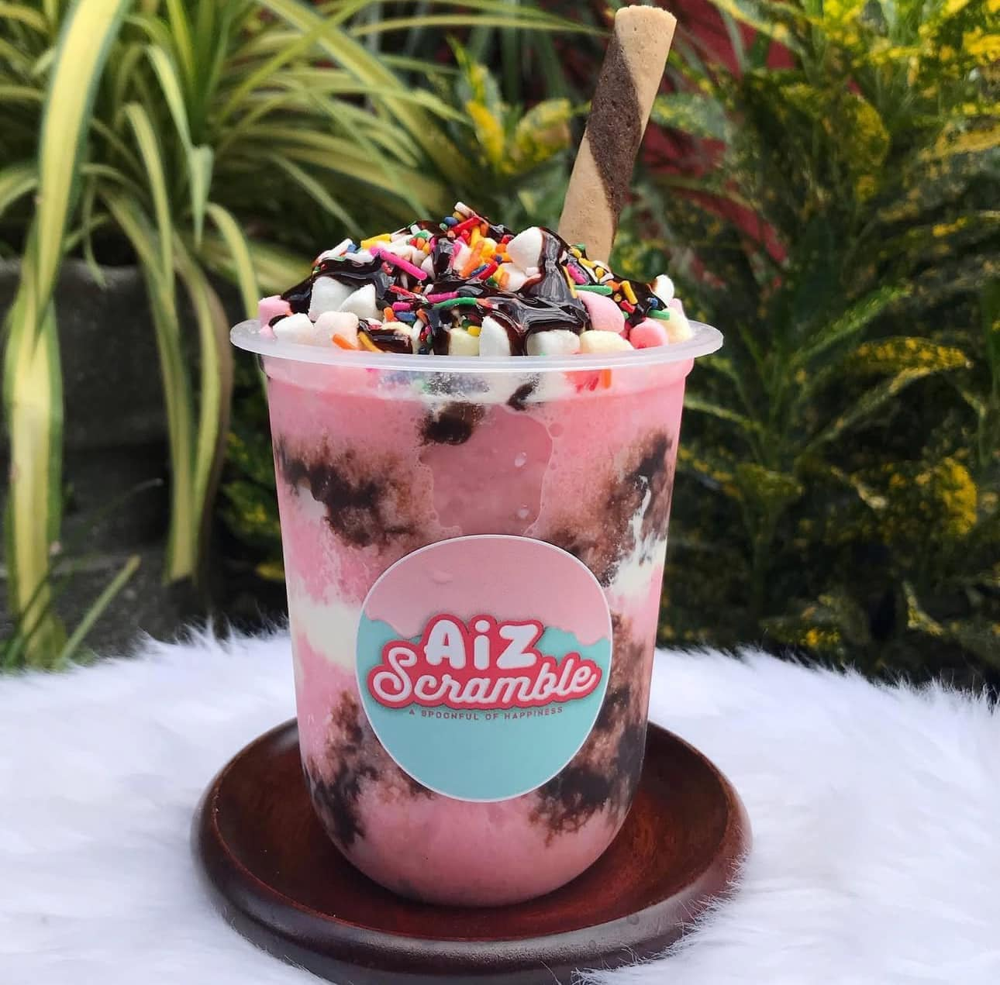
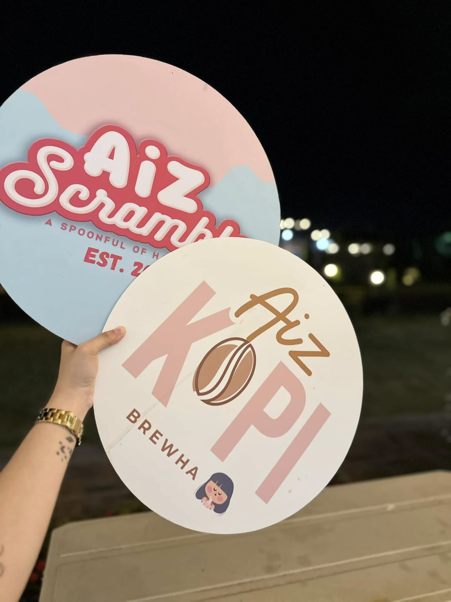
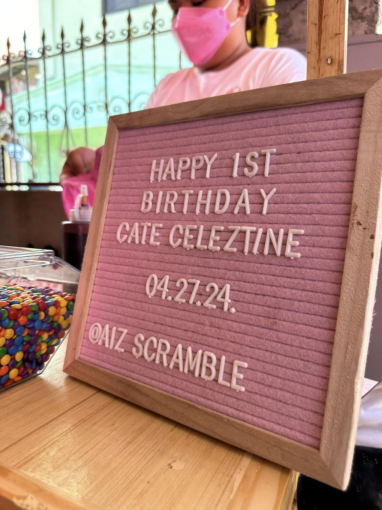
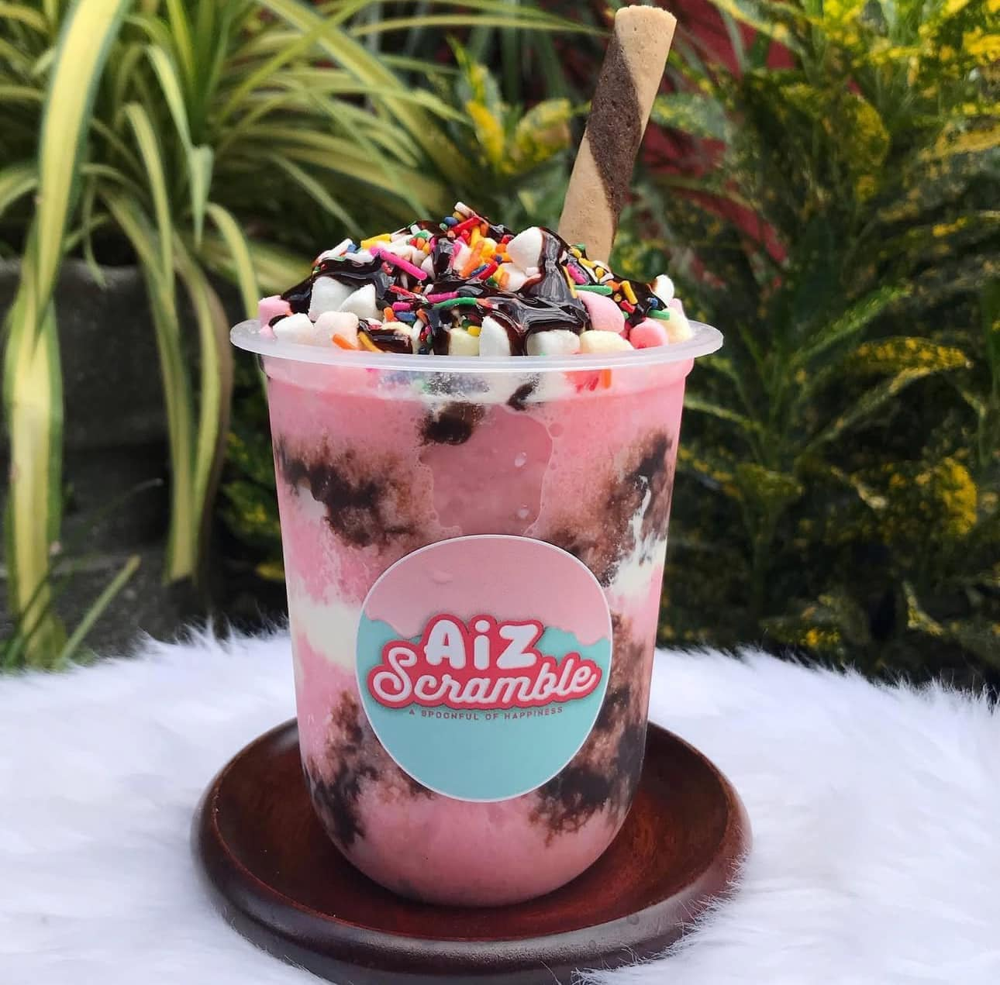
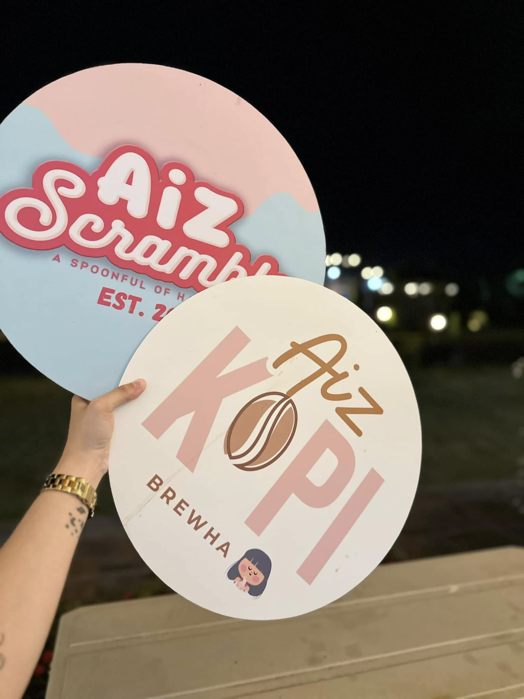

Aiz Scramble was launched in 2021 in Sta Cruz Angat Bulacan. We began with the concept of producing
Ice Scramble and Mini Donuts that would be
having been inspired by my own ideas via online. The "look"
for our products would be simple and stylized, interesting yet refined. The taste; tasty and
homemade. We are
able to construct a mini cart in December 2021 that is situated in front of our house in Angat Bulacan.The
community has accepted us with open arms and we look
toward becoming an even larger part of
the community each and every year.
 



 




